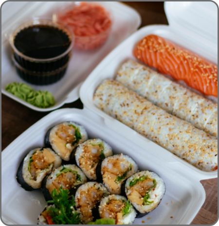
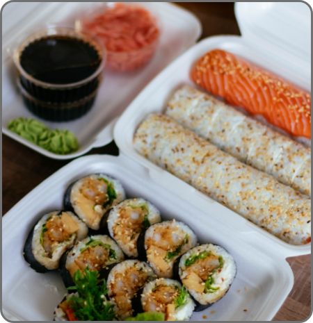

Herunder kan du se vores brede udvalg af sunde, lækre og varierede måltidskasser.
Den bæredygtige kasse er for dig, der vil bekæmpe madspild uden at gå på kompromis med kvalitet...
Få studenter rabat på denne måltidskasse, brug dit studiekort og få 15% rabat...
Er du vegetar? Denne kasse har kreative varierede retter præcis til dig...
Nippon er en Japansk inspireret måltidskasse service der har fokus på bæredygtighed, økologi og autencitet.
Vi vælger de lækreste retter fra hele Japan og bringer dem til Danmark og gør det nemt at få en mere varieret kost i hverdagen.
Hos Nippon går vi op i god service og kvalitet, vi er inspireret af det Japanske Kaizen koncept, som er idéen om at blive ved med at forbedre os konstant.
På vores Instagram kommer du helt tæt på Nippon. Her kan du også deltage i eksklusive konkurrencer!
 

Læs anmeldelser fra vores glade og tilfredse kunder

De bedste måltidskasser. Jeg har prøvet den veganske og vegetar kassen. Super dejlige råvare og altid levering på det rette tidspunkt. Elsker elsker elsker!
Super lækre måltidskasser. Jeg har prøvet den veganske og vegetar kassen. Super dejlige råvarer og altid levering på det rette tidspunkt.

Vildt lækre måltidskasser. Jeg har prøvet den veganske og vegetar kassen. Super dejlige råvare og altid levering på det rette tidspunkt.